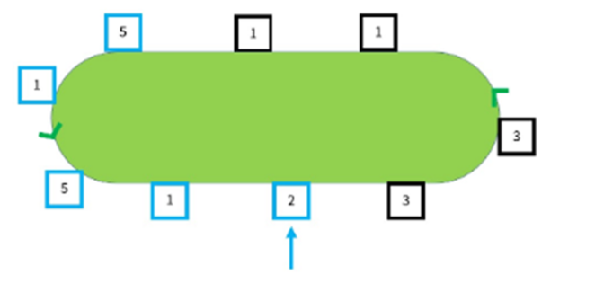

예상 : 실버1
제한 : 1초, 1024MB
현대자동차 그룹에서 운영 중인 공장의 컨베이어 벨트 위에는 자동차를 만들기 위한 부품이 돌고 있어 필요한 부품이 있으면 내려서 가져갈 수 있다. 부품의 종류는 총 5가지이고 1번에서 5번까지 번호가 붙어 있다.
작업자 선주는 각 부품 별로 필요한 개수가 있다. 이를 꺼내기 위해 자신이 원하는 자리에 선 후 컨베이어 벨트가 돌아감에 따라 자신 앞에 새롭게 놓인 부품이 필요할 경우 내리는 방식으로 부품을 챙기려고 한다. 이때 선주가 서는 위치에 따라 필요한 부품을 모두 챙길 때까지 확인해야 하는 부품의 수에 차이가 있다.
아래의 예시를 확인해보자. 선주는 1,2,3,4,5번 부품이 각각 1,1,0,0,2개 필요하고 컨베이어 벨트는 시계 반대 방향으로 돌아간다.
만약 선주가 빨간색 화살표로 표시된 곳에 서있을 경우 필요한 부품을 모두 얻을 때까지 총 8개의 부품을 확인해야 한다. (빨간색으로 표시한 구간)
만약, 선주가 파란색 화살표로 표시된 곳에 서 있을 경우 필요한 부품을 모두 얻을 때까지 총 5개의 부품을 확인해야 한다. (파란색으로 표시한 구간)

단, 한 번 가져간 부품은 다시 채워지지 않음에 유의한다.
선주가 각 부품 별로 필요한 개수와 컨베이어 벨트에 올라가 있는 부품의 목록이 시계 방향 순서대로 주어질 때, 선주가 확인해야 하는 부품의 수의 최솟값을 구해보자.
// 입력
선주가 필요한 1,2,3,4,5 부품의 수
컨베이어 위 부품의 수 N
컨베이어 위 부품의 목록
// 출력
선주가 확인해야 하는 부품의 수의 최솟값
모두 얻는 게 불가능하다면 -1을 출력한다.
##tc1##
//입력
1 1 0 0 2
9
5 1 1 3 3 2 1 5 1
//출력
5
#######
##tc2##
//입력
1 1 1 1 0
12
1 2 3 2 5 1 2 1 4 4 1 1
//출력
6
#######
##tc3##
//입력
4 0 2 0 0
5
2 1 1 3 1
//출력
-1
#######